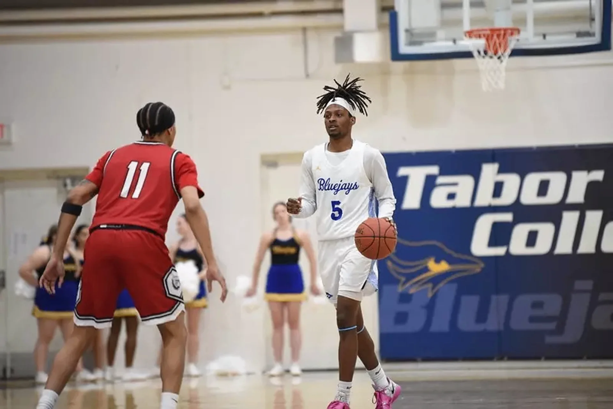

Marque Wilkerson is a senior guard out of Topeka, Kansas, who transferred to Tabor College (NAIA/KCAC) for his senior season after previously playing at MCC Thunder. A versatile, attack-minded guard, Wilkerson established himself as one of Tabor’s primary offensive options immediately upon arrival, earning a starting role and serving as the team’s go-to scorer in key moments throughout the season.
In 25 games with 21 starts at Tabor, Wilkerson posted 16.1 PPG, 4.9 RPG, 3.0 APG and 1.8 SPG while shooting 47.4% from the field and an efficient 37.7% from three. His ability to score, facilitate and defend makes him a genuine two-way option at the guard position. Game reports from the KCAC season highlight his consistency — leading Tabor in scoring on multiple occasions including a 20-point performance against Avila and a 17-point outing with 7 assists against Bethel, underlining his playmaking capacity alongside his scoring output.
The one area of note is his turnover rate at 3.2 per game relative to 3.0 assists — a ratio that suggests some refinement is needed in his decision-making as a ball handler, particularly under pressure at the professional level. Playing in the KCAC — one of the more competitive NAIA conferences — adds credibility to his numbers.
Wilkerson is a 2026 graduate and is actively seeking professional opportunities overseas.
25 games · 21 starts · Tabor College · NAIA/KCAC
Want to see your highlights on TGN?
Submit a Request